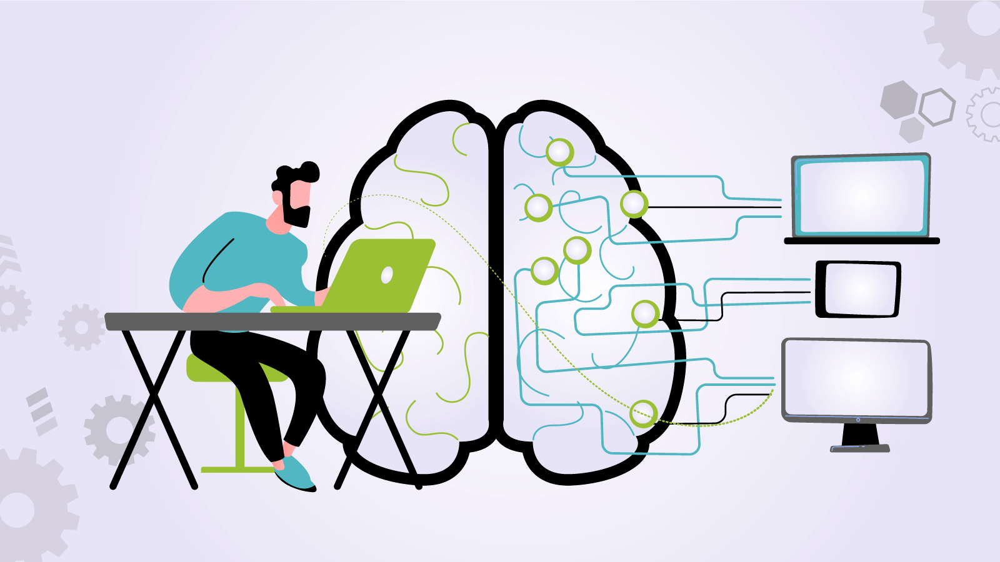

Avances 1.0
1.- La ciberseguridad se ha convertido en una prioridad para las empresas y los individuos debido al aumento de las amenazas cibernéticas.
2.- Los avances en la inteligencia artificial y el aprendizaje automático están siendo utilizados para detectar y prevenir ataques cibernéticos antes de que ocurran.
3.- Las soluciones de seguridad basadas en la nube están ganando popularidad debido a su flexibilidad y escalabilidad.
4.- Las soluciones de seguridad de IoT están evolucionando para proteger los dispositivos conectados y los datos que generan.
Avances 2.0
1.- La autenticación multifactor y la biometría están siendo utilizadas para fortalecer la seguridad de las contraseñas y proteger los datos personales.
2.- Las soluciones de seguridad basadas en blockchain están siendo desarrolladas para garantizar la integridad y la autenticidad de los datos.
3.- Los esfuerzos de colaboración entre la industria, el gobierno y los investigadores están ayudando a mejorar la ciberseguridad en todo el mundo.
4.- La conciencia y la educación sobre la ciberseguridad están aumentando, lo que ayuda a reducir los riesgos y aumentar la protección.

Avances 3.0
1.- Las soluciones de seguridad basadas en la inteligencia artificial están siendo utilizadas para identificar patrones de comportamiento anormal que podrían indicar un ataque.
2.- Las soluciones de seguridad de la cadena de suministro están evolucionando para garantizar que los proveedores y los productos sean seguros.
3.- Las soluciones de seguridad de la nube híbrida están siendo desarrolladas para proteger los datos y las aplicaciones que se ejecutan en múltiples plataformas.
4.- Las soluciones de seguridad de la automatización están siendo utilizadas para reducir el tiempo necesario para detectar y responder a un ataque.